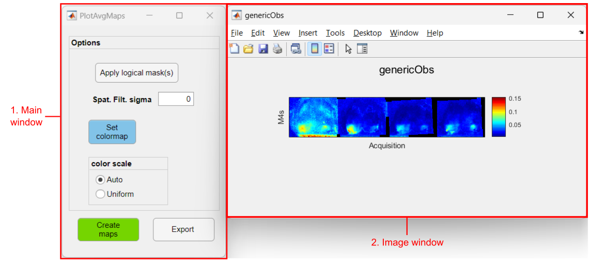

This tool is part of the Analysis tab from the umIToolbox app. It displays the group average of activation maps (with dimensions Y,X) for each acquisition and observation.
To use the tool, first, select the recordings, files and observations (e.g. ROIs) to be displayed. Then, launch the tool by clicking on Plot Average Maps button in the Apps & tools panel.
This tool accepts maps data types (i.e. data with dimensions (E),Y,X,O) stored in .mat files. This kind of data is generated by some of the Analysis functions such as the genCorrelationMatrix function. Please refer to these functions for more details.
In order to average the maps of different subjects , This tool uses the coordinates of a reference point (e.g. the Bregma position on the mouse skull) as well as the pixel size of the image to perform a translation and scaling of the activation maps (rotation is not performed here!)). This information is stored on the data files under the variables refPt and pxPemm, respectively. Currently, only imaging data that was preprocessed using either the automatic or manual alignment options contain this information.
Tip
This tool does not perform any rotation to the images. Thus, it is advisable to process the alignment (preprocessing step) using a reference frame in a consistent position. For instance, for mouse cortical imaging data, be sure to vertically align Bregma and Lambda landmarks before creating the Imaging Reference Frame.
Please, read the documentation of the ROImanager app and the tutorials on how to align imaging datasets for details on how to edit and create Imaging Reference Frames.

Interface components
Important
This tool will look for the logical masks in the Imaging Reference Files located in the subject folder. In order to make this work, all subject folders must contain an Imaging Reference .mat file with an existing logical mask. The .mat file must have the same name in all folders.
One figure (image window) is created for each observation contained in the input data. A montage of the average maps is shown for each group where the maps are displayed in chronological order (from left to right). A montage is created for each experimental group.
In this example, we show how to plot the average seed-pixel correlation maps of four mice for a subset of two ROIs (i.e. observations) as seed (see image below). The input data was generated using the genCorrelationMatrix function.
The data from four resting state acquisitions from four mice is selected. The left and right primary visual areas (V1) will be visualized
How to create average maps:
Note
Note that when using logical masks, an extra figure is created showing the overlay of all individual masks used.
In the example below, we show the average maps of two experimental groups (M4s and M5s) with data of five events across four acquisitions:
The data from four event-triggered response acquisitions from two groups of two mice each.
How to create average maps: